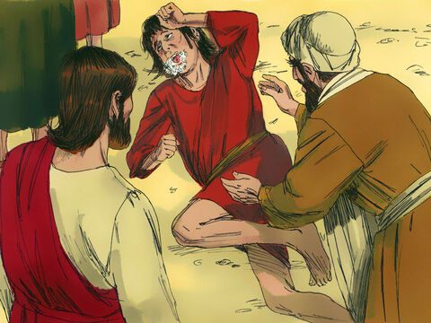
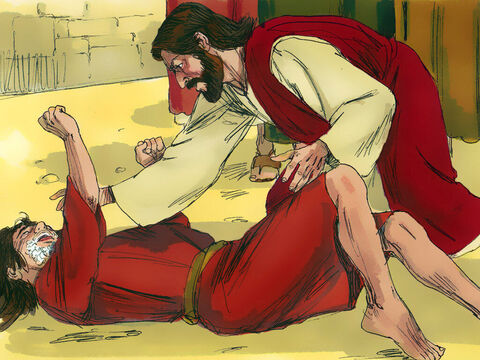
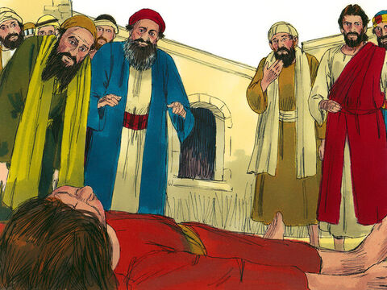

Lord Jesus Heals A Demon-Possessed Boy
And when they were come to the multitude, there came to him a certain man, kneeling down to him, and saying,
Lord, have mercy on my son: for he is lunatick, and sore vexed: for ofttimes he falleth into the fire, and oft into the water.
And I brought him to thy disciples, and they could not cure him
Then Jesus answered and said, O faithless and perverse generation, how long shall I be with you? how long shall I suffer you? bring him hither to me.
And Jesus rebuked the devil; and he departed out of him: and the child was cured from that very hour.
Then came the disciples to Jesus apart, and said, Why could not we cast him out?
And Jesus said unto them, Because of your unbelief: for verily I say unto you, If ye have faith as a grain of mustard seed, ye shall say unto this mountain,
Remove hence to yonder place; and it shall remove; and nothing shall be impossible unto you.
Howbeit this kind goeth not out but by prayer and fasting.
Matthew 17:14-21
- 
- 
- 